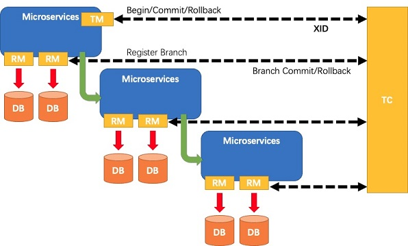

Seata 模式[3] #
| 功能名称 | 特点 | 基本原理 | 使用场景 | 存在问题 | 性能 | 复杂度 |
|---|---|---|---|---|---|---|
| AT 模式 AT模式官方文档 1 |
自动补偿事务 | 代理数据源，一阶段解析sql将数据写入undo_log表，二阶段根据undo_log表进行回滚 | 支持 ACID 事务的关系型数据库 | 开发时需注意：脏读 | 性能较高 | 开发简单 |
| TCC 模式 TCC模式官方文档 |
手动补偿事务 | 代理数据源，一阶段执行prepare方法，二阶段执行commit或rollback方法 | 不支持 ACID 事务的数据库 | 开发时需注意：空回滚、幂等、悬挂 | 性能高 | 开发复杂 |
| Saga 模式 SAGA模式官方文档 |
基于状态机引擎实现，用户设计状态图，开发rollback方法，状态机根据状态图 json 调用相关方法 | 业务流程长、业务流程多 参与者包含其它公司或遗留系统服务，无法提供 TCC 模式要求的三个接口 |
除了额外开发方法，需设计开发状态图 json | 性能高 | 开发复杂 | |
| XA 模式 XA模式官方文档 |
满足全局数据一致性. AT、TCC、Saga 都是补偿型，无法做到真正的全局一致性. |
由数据库XA协议完成提交、回滚 | 支持XA 事务的数据库 | 性能较低 | 性能较低 | 开发简单 |
AT模式 [1] #

- 典型的分布式事务过程：
- TM 向 TC 申请开启一个全局事务，全局事务创建成功并生成一个全局唯一的 XID；
- XID 在微服务调用链路的上下文中传播；
- RM 向 TC 注册分支事务，将其纳入 XID 对应全局事务的管辖；
- TM 向 TC 发起针对 XID 的全局提交或回滚决议；
- TC 调度 XID 下管辖的全部分支事务完成提交或回滚请求。
AT模式 示例 [4] #
@Service
public class OrderServiceImpl implements OrderService {
...
@GlobalTransactional /// TM
@Override
public OperationResponse placeOrder(PlaceOrderRequestVO placeOrderRequestVO) throws Exception {
...
// 扣减库存
DynamicDataSourceContextHolder.setDataSourceKey(DataSourceKey.STOCK);
boolean operationStockResult = stockService.reduceStock(placeOrderRequestVO.getProductId(), amount);
// 扣减余额
DynamicDataSourceContextHolder.setDataSourceKey(DataSourceKey.PAY);
boolean operationBalanceResult = payService.reduceBalance(placeOrderRequestVO.getUserId(), price);
...
}
}
@Service
@Slf4j
public class PayServiceImpl implements PayService {
...
/**
* 事务传播特性设置为 REQUIRES_NEW 开启新的事务
*
* @param userId 用户 ID
* @param price 扣减金额
*/
@Transactional(rollbackFor = Exception.class, propagation = Propagation.REQUIRES_NEW) /// RM
@Override
public boolean reduceBalance(Long userId, Integer price) throws Exception {
...
log.info("开始扣减用户 {} 余额", userId);
Integer record = accountDao.reduceBalance(price);
log.info("扣减用户 {} 余额结果:{}", userId, record > 0 ? "操作成功" : "扣减余额失败");
return record > 0;
}
...
}
Seata 同类产品 #
-
TCC 模式
Eg: 支付宝DTS #3
蚂蚁 XTS(内部)/DTX(蚂蚁金融云) #3 -
两阶段
阿里 TXC(内部)/GTS(阿里云)
非入侵性
AT Mode 基于 支持本地 ACID 事务 的 “关系型数据库”
MT Mode 支持把"自定义"的分支事务纳入到全局事务的管理中
参考 #
-
Seata AT 模式 官方文档
-
早期
-
分布式事务之TCC事务 梁钟霖
-
分布式事务之TCC服务设计和实现注意事项 绍辉